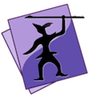
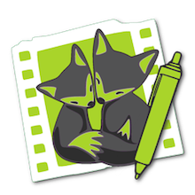
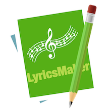

macOS Apps
MathHelfer is an ultra lightweight word processor help you write well formatted science article in a very light and efficient way without install huge software packages such as TEX and Office Suite.
 The free small IDE for scripting languages. Speare is an ultra lightweight code editor and a small IDE that provides builtin debugging environment for C, C++, Ruby, mruby, Lua, Python, PHP, Perl and Tcl.
 LittleFox is a small tool designed to help user share audio or video on social websites or make slideshows with speech audio and picture in a simple and efficient way. It was developed to conveniently synthesis subtitle with video or audio without traditional boring works.
Guard7 is a cryptography tool used to protect your confidential information very simple and easy. It is an encryption and decryption system based on industry standard and was developed as the graphical frontend for the GNU Privacy Guard (GnuPG or GPG) on macOS with additional features.
Beak is a small utility used to reduce binary size of your software for embedded systems, and also an ultra small C and C++ obfuscator that used to encrypt source code of your software.
 LyricsMaker is a small tool that was designed to easily make lyrics sheet for music or generate subtitle for movie on macOS.
uFTP Server is a very simple personal FTP Server designed for macOS without any user authentication, without complex and boring configuration, but still has very high performance.
Taihaa is a fate telling app. It's a high precision fate analysis engine and high accuracy fate telling app designed for embedded systems that can be developed as standalone machine or handheld device. Consumers only needs to scan the CR code with their mobile phone and then the machine can print beautifully fate analysis report.
iOS Apps
iPowerReader is a Finder-like file manager on iOS device, you can transfer, delete, rename any file or folder one by one just like in Finder that completely different with translating files with iTunes that required to sync whole folder, it's more intuitive, simple, fast and feel free. You can conveniently share your documents in your iOS devices between Mac, Windows PC, Linux, Android, Unix, PSP and other platforms remotely.
Mr.IQ is an utility designed for Raven's Standard IQ Test. This is the standard approach to process accurate IQ test. It can be used for serious test or only just for fun.
CCReviewer is a powerful Chinese chess machine. It was designed to record chess moves in international competitions. It's also a powerful tool to learn how to play Chinese Chess and a chess analysis tool that even give your the ability to participate in any history games.
Small Train is a very special music game designed to suitable for children and parents with IQ challenging based on simple rules. It was developed as a training software that make children happy and smarter.
Business Chinese is a very useful self-study tool developed to help people to learn the Business Chinese in an efficient way. It can speak word, sentence or a whole paragraph and has a builtin Kanji character stroke animation engine that can demonstrate how to writing each character.
About Apple App Store
Note: One thing you must know is, they do very bad things on Apple App Store, these gentlemen leaved bad comments on the "ratings and reviews" of some good apps or vice versa to mislead people, so please judge one app's value by yourself instead of what they said.